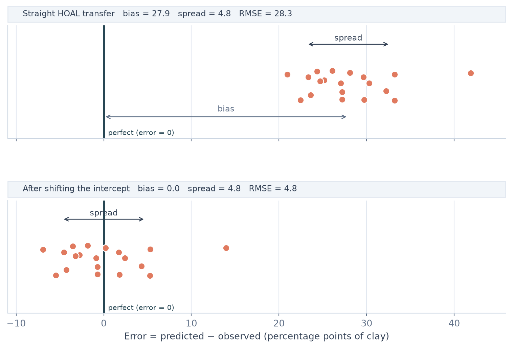

import numpy as np
import pandas as pd
import matplotlib.pyplot as plt
from scipy import stats
from pipeline import load_data
from plot_style import COLORS, LINE_COLOR, add_header
hoal, raasdorf_2024, raasdorf_2026 = load_data()A2: Recalibrating the intercept
Slide the HOAL line to the Raasdorf level, then test honestly whether it helps.
The straight transfer from HOAL to Raasdorf_2024 failed. For clay, almost all of the error was one constant offset: the HOAL line predicted too high at every Raasdorf sample by about the same amount. A constant offset is something we can correct.
The idea is to keep the HOAL line and slide it up or down to the Raasdorf level, without changing its slope. This is called recalibration of the intercept (also “recalibration-in-the-large” or “bias correction”). It is a standard way to update a model for a new setting (janssen2008?; dardenne2004?).
y = m × U238 + b_new
m = the HOAL slope (unchanged)
b_new = the HOAL intercept + the average of (observed − predicted) at RaasdorfThe page has four steps:
- Repeat the straight transfer and look at its error.
- See what the shift does to that error.
- Test the shift honestly, on samples that were not used to set it.
- Write down the recalibrated equation.
Set up
Step 1: the straight transfer
We apply the HOAL line for clay and silt, using U238, to the Raasdorf_2024 points. Nothing is refitted.
chosen = {"Clay": "U238", "Silt": "U238"}
hoal_fits = {}
predictions = {}
for target, predictor in chosen.items():
fit = stats.linregress(hoal[predictor], hoal[target])
hoal_fits[target] = fit
predictions[target] = fit.intercept + fit.slope * raasdorf_2024[predictor]The error of each point is predicted minus observed. We split it into two parts:
- bias: the average error, which is how far the predictions are off in one direction.
- spread: how much the errors differ from one another around that average.
The RMSE combines the two: RMSE² = bias² + spread².
rows = []
for target in chosen:
error = predictions[target] - raasdorf_2024[target]
rows.append({
"texture": target,
"bias": error.mean(),
"spread": error.std(ddof=0),
"RMSE": np.sqrt((error ** 2).mean()),
})
pd.DataFrame(rows).round(1)| texture | bias | spread | RMSE | |
|---|---|---|---|---|
| 0 | Clay | 27.9 | 4.8 | 28.3 |
| 1 | Silt | -5.6 | 5.0 | 7.6 |
Step 2: what the shift does
Every dot below is one Raasdorf sample, placed at its error for clay. Zero means a perfect prediction.
The top panel is the straight transfer. The dots sit far from zero, which is the bias, and they are spread over a width, which is the spread. The bottom panel is the same dots after the intercept shift: every prediction is moved by the same amount, so the whole group slides onto zero.
target = "Clay"
error = predictions[target] - raasdorf_2024[target]
shifted = error - error.mean()
jitter = np.random.default_rng(0).uniform(-0.3, 0.3, len(error))
low = min(error.min(), shifted.min()) - 4
high = max(error.max(), shifted.max()) + 4
fig, axes = plt.subplots(2, 1, figsize=(8, 5.5), sharex=True)
panels = [(error, "Straight HOAL transfer"), (shifted, "After shifting the intercept")]
for ax, (values, title) in zip(axes, panels):
bias = values.mean()
bias = 0.0 if abs(bias) < 0.05 else bias
spread = values.std(ddof=0)
rmse = np.sqrt((values ** 2).mean())
# the bullseye: error = 0
ax.axvline(0, color=LINE_COLOR, linewidth=2)
ax.text(0.5, -0.97, "perfect (error = 0)", color=LINE_COLOR, fontsize=8, va="bottom")
ax.scatter(values, jitter, s=55, color=COLORS[target], edgecolor="white", zorder=3)
# bias: the distance from the bullseye to the centre of the dots
if abs(bias) > 0.5:
ax.annotate("", xy=(bias, -0.6), xytext=(0, -0.6),
arrowprops=dict(arrowstyle="<->", color="#64748B"))
ax.text(bias / 2, -0.5, "bias", ha="center", fontsize=9, color="#64748B")
# spread: how wide the dots are around their own centre
ax.annotate("", xy=(bias + spread, 0.75), xytext=(bias - spread, 0.75),
arrowprops=dict(arrowstyle="<->", color="#334155"))
ax.text(bias, 0.82, "spread", ha="center", fontsize=9, color="#334155")
ax.set_ylim(-1, 1.1)
ax.set_yticks([])
add_header(ax, f"{title} bias = {bias:.1f} spread = {spread:.1f} RMSE = {rmse:.1f}")
axes[1].set_xlim(low, high)
axes[1].set_xlabel("Error = predicted − observed (percentage points of clay)")
plt.tight_layout()
plt.subplots_adjust(hspace=0.55)
plt.show()
The shift removes the bias and leaves the spread untouched, so the RMSE falls to the size of the spread, and no lower.
WarningThis improvement is too good to trust
We set the shift using the same samples we are scoring. Moving the line by the average error makes the average error zero by construction, so the bottom panel always looks good. The next step tests it fairly.
Step 3: the honest test
To test the shift on samples that were not used to set it, we use leave-one-out. For each Raasdorf sample in turn:
- Leave that sample out.
- Set the shift from the other 18 samples.
- Use the shifted line to predict the sample that was left out, and record the error.
After 19 rounds, every sample has been predicted by a shift that never saw it. The table compares five numbers:
- RMSE straight transfer: from step 1.
- RMSE shifted, same points: the optimistic number from step 2.
- RMSE shifted, leave-one-out: the honest error of the recalibrated line.
- RMSE local mean, leave-one-out: the error from ignoring HOAL altogether and predicting the average Raasdorf texture. This is the benchmark the recalibrated line has to beat.
- slope of observed on predicted: does the HOAL line point the right way at Raasdorf? A value near 1 means the line has the right shape and only its level was off. A value near 0 or negative means the HOAL relationship does not hold at Raasdorf.
rows = []
for target in chosen:
predicted = predictions[target].to_numpy()
observed = raasdorf_2024[target].to_numpy()
shifted_errors = []
mean_errors = []
for i in range(len(observed)):
others = np.arange(len(observed)) != i
shift = (observed[others] - predicted[others]).mean()
shifted_errors.append(observed[i] - (predicted[i] + shift))
mean_errors.append(observed[i] - observed[others].mean())
same_points = observed - (predicted + (observed - predicted).mean())
rows.append({
"texture": target,
"RMSE straight transfer": np.sqrt(np.mean((observed - predicted) ** 2)),
"RMSE shifted, same points": np.sqrt(np.mean(same_points ** 2)),
"RMSE shifted, leave-one-out": np.sqrt(np.mean(np.square(shifted_errors))),
"RMSE local mean, leave-one-out": np.sqrt(np.mean(np.square(mean_errors))),
"slope of observed on predicted": stats.linregress(predicted, observed).slope,
})
recalibration = pd.DataFrame(rows).round(2)
recalibration| texture | RMSE straight transfer | RMSE shifted, same points | RMSE shifted, leave-one-out | RMSE local mean, leave-one-out | slope of observed on predicted | |
|---|---|---|---|---|---|---|
| 0 | Clay | 28.32 | 4.78 | 5.05 | 2.40 | -0.27 |
| 1 | Silt | 7.55 | 5.02 | 5.29 | 3.75 | -0.05 |
We decided in advance what counts as success. The recalibration is worth using only if:
- the leave-one-out RMSE of the shifted line is below the local-mean RMSE, and
- the slope of observed on predicted is close to 1.
If either fails, the shift is only hiding a relationship that does not hold at the new site.
Step 4: the recalibrated equation
This is the equation you would report. It uses all 19 Raasdorf samples to set the shift. Its expected error is the leave-one-out number from step 3, not the “same points” number.
for target, predictor in chosen.items():
fit = hoal_fits[target]
shift = (raasdorf_2024[target] - predictions[target]).mean()
print(f"{target}, HOAL line: y = {fit.slope:.2f} x {predictor} {fit.intercept:+.1f}")
print(f"{target}, recalibrated: y = {fit.slope:.2f} x {predictor} {fit.intercept + shift:+.1f} (shift {shift:+.1f})")Clay, HOAL line: y = -1.08 x U238 +78.7
Clay, recalibrated: y = -1.08 x U238 +50.8 (shift -27.9)
Silt, HOAL line: y = 1.08 x U238 +14.3
Silt, recalibrated: y = 1.08 x U238 +20.0 (shift +5.6)Limits to keep in mind
Warning
- It fixes the level, not the relationship. The slope stays the HOAL slope, so the line ranks samples exactly as before (janssen2008?). With few samples and a weak correlation, correcting the slope as well is not advisable, because it would be too uncertain (dardenne2004?).
- It needs local lab data. The result is “the HOAL equation plus some Raasdorf samples”, not a pure transfer.
- Only 19 samples. Every number above is rough.
- The real test is still to come. When the Raasdorf_2026 lab results arrive, apply this recalibrated line to them without changing it. Those samples were not used to set the shift, so they are the fairest test of all.